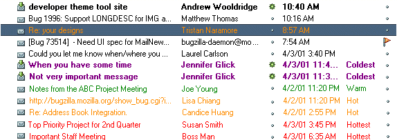
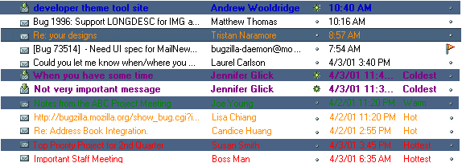
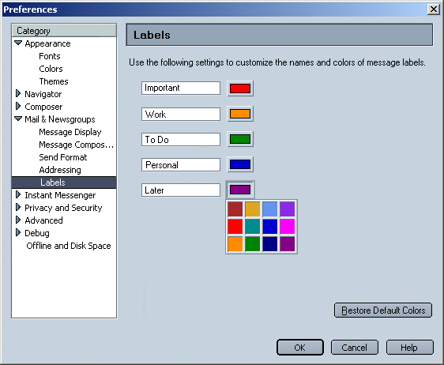
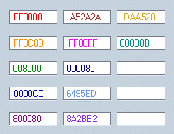
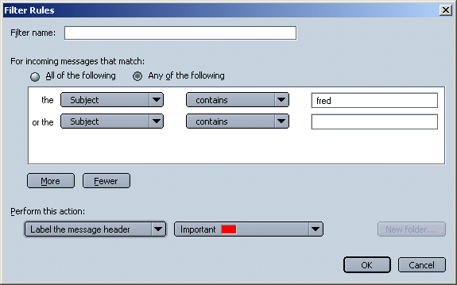

|
MachV/Mozilla: Mail and News |
UI Specification
|
|
Labels |
Last Modification: |
|
Author: Jennifer Glick |
Status: Mostly Complete |
||||||||||||
|
Quicklinks: Menu Access |
Feature Team
|
As people continue to get more and more email messages on a daily basis, they are continually looking for ways to organize and prioritize it all. Flagging messages is a useful method but looses its effectiveness as more and more messages pile up. The Labels feature provides users with a method to use 5 colored and named categories to help them group, organize and prioritize their messages. Users can change the name and or color of each Label. An optional Label column is available for sorting by Label.
Users would also be able to setup filters in which the resulting action is to mark a message with a particular Label. For example, users could create a filter to mark all new messages from a particular person with the "red/hottest" Label.
Using the "Message --> Label" menu, users can assign a label value to message headers in the Thread Pane. A message can have only one label at a time (mutually exclusive options). Selecting another label for a message which already has a label will change the message header to the new label. Selecting the "None" option will remove the label from the selected message(s).
A message with a label is displayed in the Thread Pane with its header the color of the selected label. There is an optional "Label" column which can be displayed and used to sort messages according to Label. The Label Column displays the text name of each Label. The Label Column is Not displayed by default.

Clicking on the Label column heading should toggle between sorting the messages with labels at the top of the Thread Pane and sorting messages with Labels at the bottom of the thread pane. Sorted at the top: Hottest, Hot, Warm, Cold, Coldest, No Label. Sorted at the Bottom: No Label, Coldest, Cold, Warm, Hot, Hottest.
Clicking on the message header in the label column should cycle between the available labels and no label. For example, the message header has no label, clicking on the message header in the label column changes the message header label to "hotest". Clicking again changes it to "hot", then "warm", then "cold", then "coldest", then off again.
If a message header which has a Label is selected, the text color changes to white and the background highlight color is the color of the Label. Otherwise, if a message is selected and the user adds/removes a Label, there is no feedback that there request was honored until they deselect the message. (If we leave the text color the label color and use the default highlight color, the text may not always be readable).
Example 1

Example 2

Example 3 - Work OK with some color combos.

Example 4

Default names and color values for each of the Labels are shown below. Using the preference settings, users can customize the names of the Labels as well as the colors that are associated which each Label.

All Available Color Hex Values (chart is not part of the UI and is for reference only):

Note: a Label name is limited to 32 characters.
The "Restore Default Colors" button will return the colors to the original defaults.
Users can also use the filters feature to have certain message headers automatically marked with labels. The labels menu would update appropriately if the user changed any of the Label names or colors.
